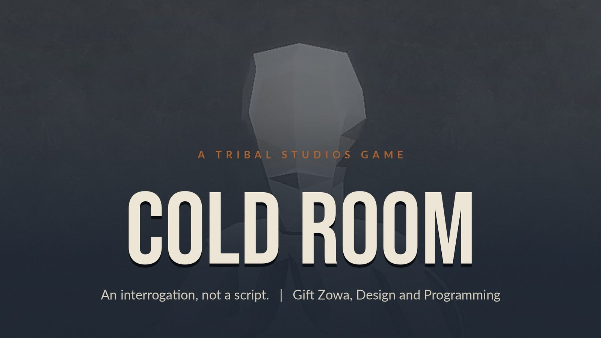
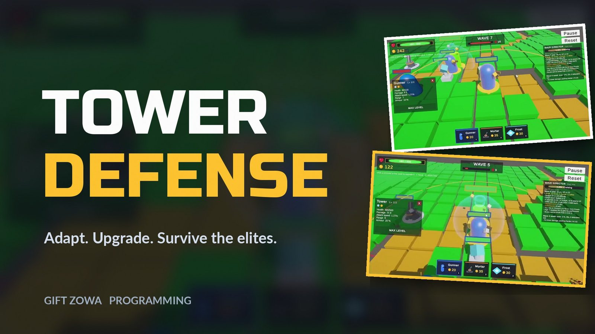
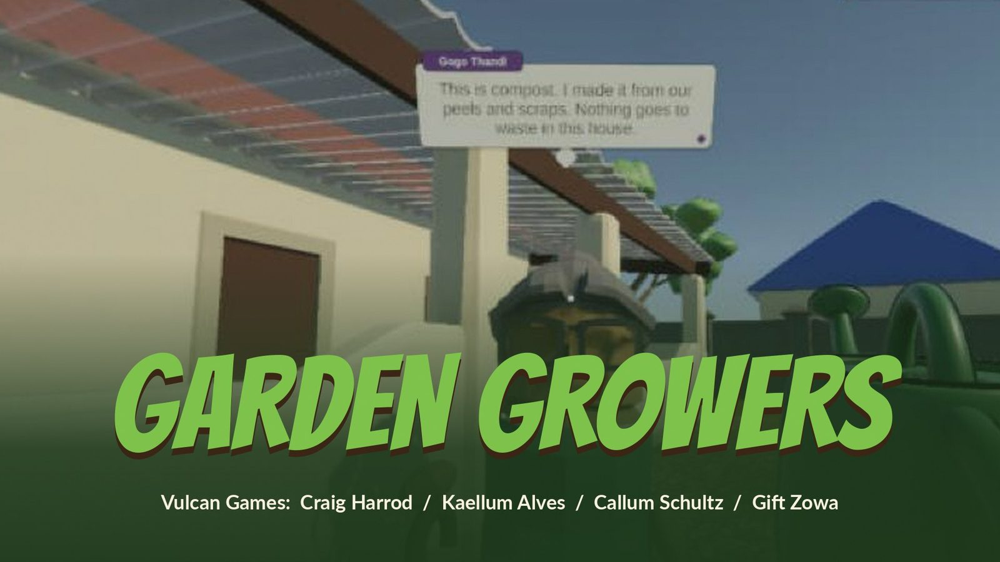

Gift ZowaGameplay & AI Programmer
I build game systems that react to the player. Unity and C# developer focused on AI characters, adaptive difficulty and procedural systems.
Three projects, three kinds of systems
An AI-driven interrogation, an adaptive tower defense and a tutorial NPC built inside a team codebase. Each page covers the brief, my role, the tools, the process and links to play.

Cold Room
A whodunit where the suspects aren't scripted: ask anything, catch the lie, name the culprit.

Tower Defense
Three procedural paths, an adaptive wave director, and elite enemies that are never the same twice.

Garden Growers
Turn Gogo's empty backyard into a garden that feeds the whole street.
Hi, I'm Gift.
I'm a final year Game Design and Development student at Vega School (Emeris, Cape Town). I work mostly in Unity and C#, and I like the parts of a game that think: AI characters, wave directors, state machines and procedural systems.
My favourite problems sit between design and code. How do you make a suspect lie in a way that feels human? How does a wave director push back when the player gets too strong? I like answering those questions with working builds, then playtesting until the answer holds up.
I'm looking for junior or graduate roles as a gameplay programmer or AI/systems programmer, in studio or remote.
Skills
- Engines
- Unity 6 (URP), Unreal Engine 5, Roblox Studio
- Languages
- C#, C++, HLSL / ShaderLab, Lua, Kotlin, Python
- Systems
- AI and LLM integration, State machines, Procedural generation, Data-driven design (ScriptableObjects), Custom URP shaders
- Tools
- Git and GitHub, Visual Studio and VS Code, Ollama, CapCut, AI-assisted coding (Claude Code)
Let's talk
Open to junior and graduate roles, in studio or remote.